What is Pockigo ?
Pockigo is a travel planning platform designed for both web and mobile.
On this case study we worked on the first task "Getting a personalized itinerary" on the web.
We worked on the second task "Tracking the itinerary" on mobile in another case study.
Business Needs
- Provide a personalized itinerary based on destination, date or trip duration, and user's interests.
- Allow user to modify the itinerary with ease.
- Offer an interactive map view.
- Allow user to share the itinerary with their travel buddy.
- User can access their past, active and upcoming plans anytime.
Design Goals
- Comprehensive and accurate filtering system
- Easy to use for people of all ages
- A smooth and convenient navigation
- Visually appealing and functional interface.
Research and Design
- User interviews
- Affinity Diagram
- Competitive Analysis
- Persona
- Scenario
- User flow
- Card sorting
- Site map
- Mid Sketch
- Low fidelity
- Mood Board
- Mid fidelity
- User Testing
- Iteration
- High Fidelity Designs
- Prototype
We started the research for "Getting a personalized itinerary" on the website.
Discover
Interview
We started by conducting interviews with 20 potential participants to understand their common needs and pain points.
Affinity Diagram
Common User Needs and Pain Points
- An overwhelming number of options to choose from.
- Concerns about travel distances between activities that could affect time efficiency.
- Difficulty finding precise informations about activities scattered on the internet.
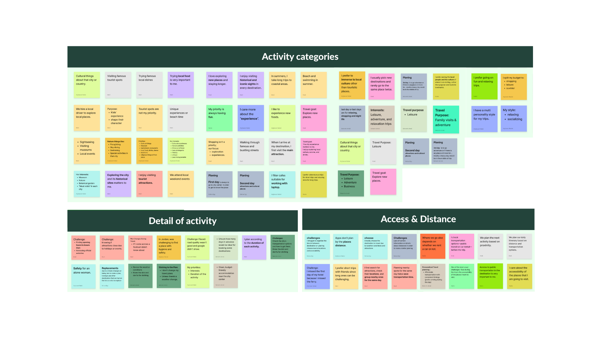
Comprative & Competitive analysis
We looked at some of the most popular travel planning platforms and compared their features side-by-side and analyzed how closely they compare to what we're building. These insights guided our design decisions, ensuring the user interface directly addresses unmet needs and delivers a smoother experience.
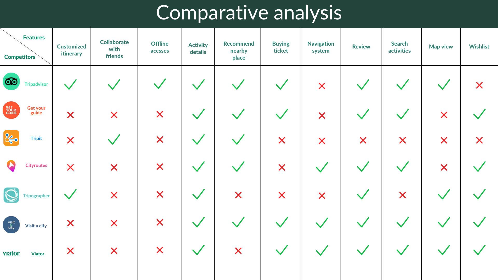
We identified Tripadvisor, GetYourGuide, and Tripographer as our main competitors and analyzed their weaknesses:
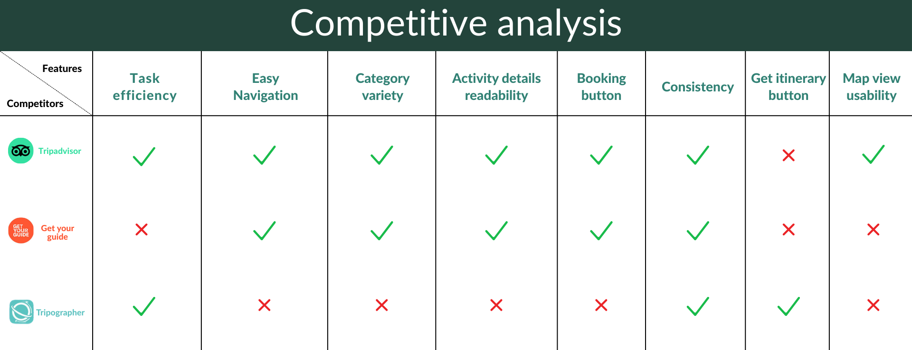
- Tripadvisor – Missing "Get Itinerary" button, limiting quick access to plans.
- GetYourGuide – Low task efficiency and no direct itinerary access.
- Tripographer – Poor navigation, limited category variety, and weak activity readability.
By studying these pain points, we ensured Pockigo avoids the same issues. We also drew from their strongest features to create a user flow that is intuitive, efficient, and easy to follow for our target audience.
Persona
To define key tasks for our design and clearly convey the user insights gathered during research, we created a persona along with a scenario.
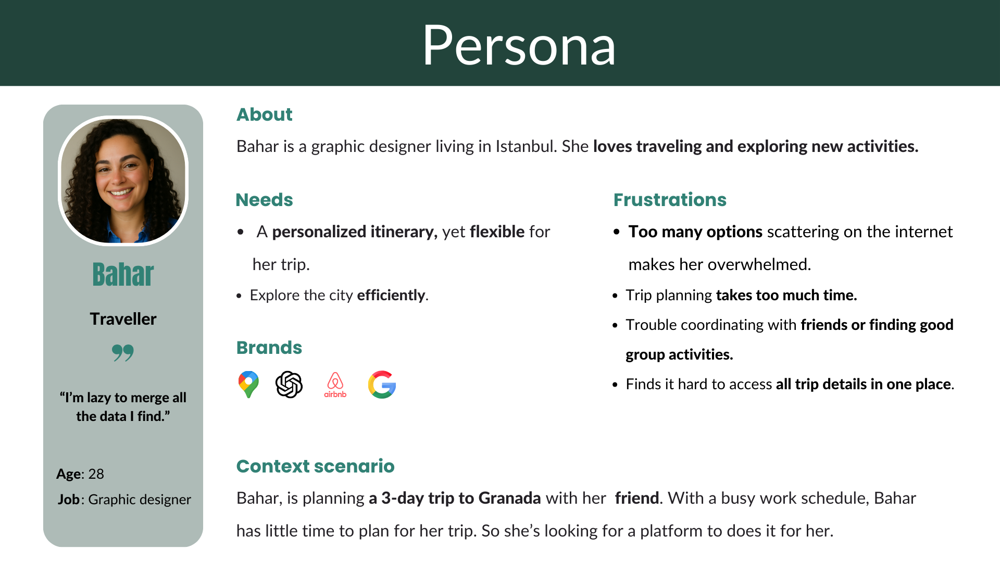
Task Flow
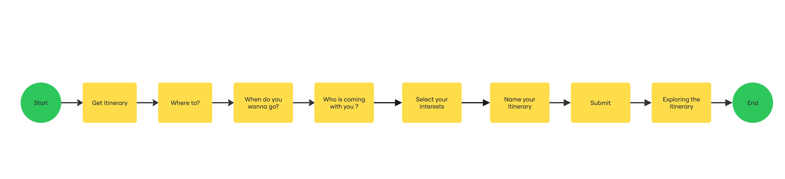
Scenario
Bahar is gonna travel to Granada, Spain with a friend for the first time. She needs an itinerary suitable for a friends trip. She opens Pockigo's website and start to get an itinerary. She answers the questions about the destination, date and choose their interests. She gets the itinerary and shares it with her friend.
Card sorting
To organize the categories and find the most suitable labels, we conducted a card sorting exercise with 6 participants. Based on the definition of our task, we explored activities in Granada and used card sorting to identify and refine the appropriate category names.
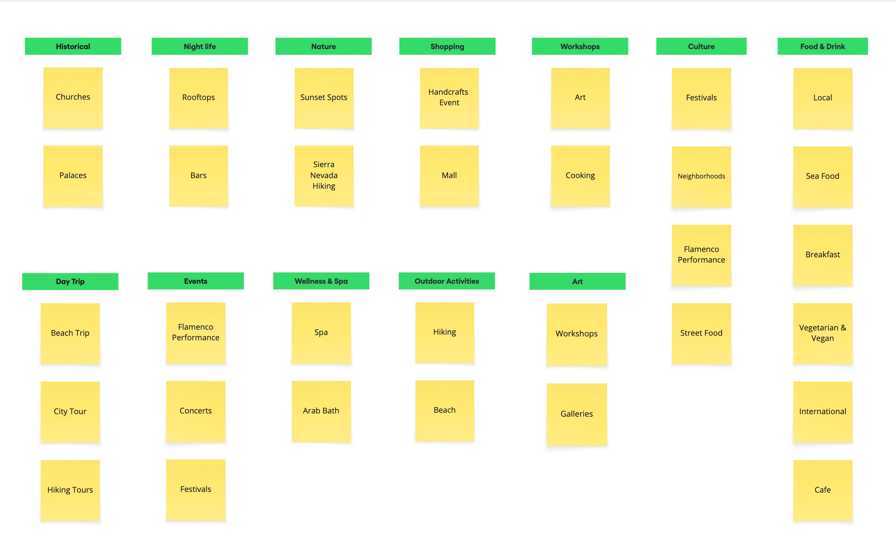
Site Map
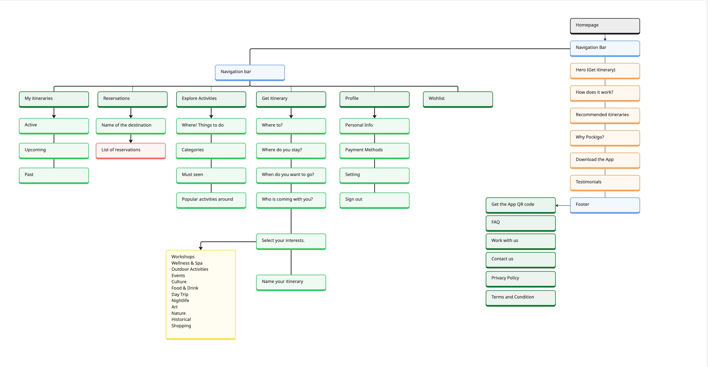
Mood Board
The mood board defined Pockigo's visual tone — friendly, modern, and adventurous — and guided every colour, type and imagery decision in the high-fidelity stage.

UI Kit
A complete UI kit was built to ensure visual consistency across every screen — covering typography, colour palette, grid system, iconography, CTAs, components, cards and the menu pattern.
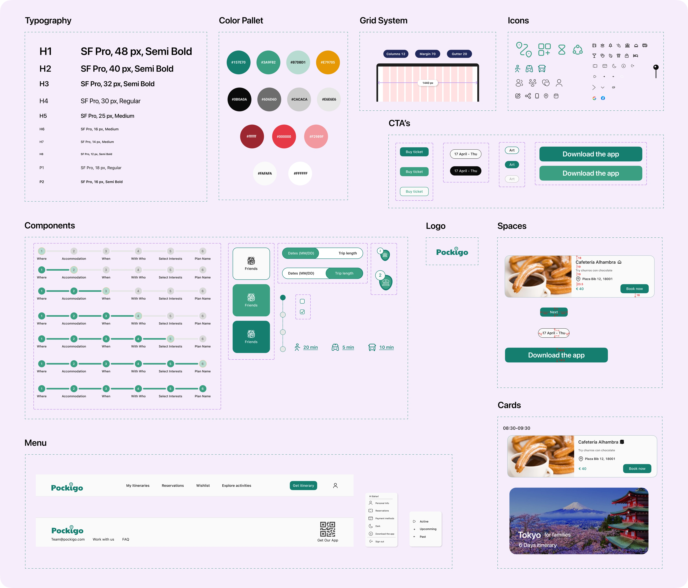
Mid Fidelity version 1
Home page
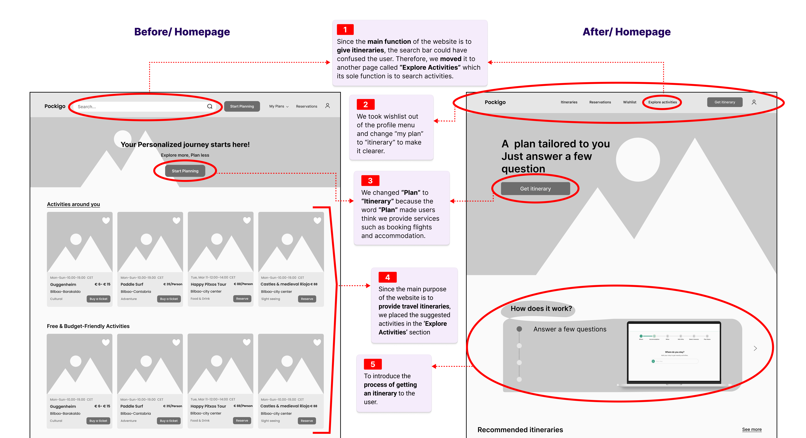
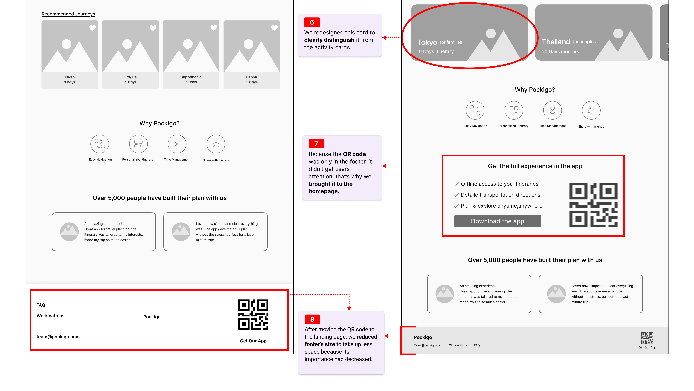
Itinerary Page
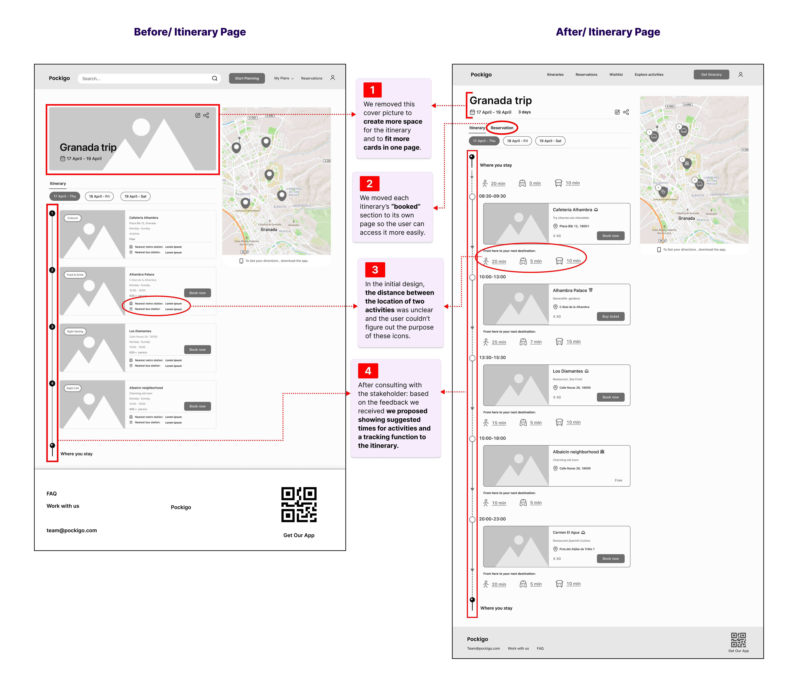
Map View
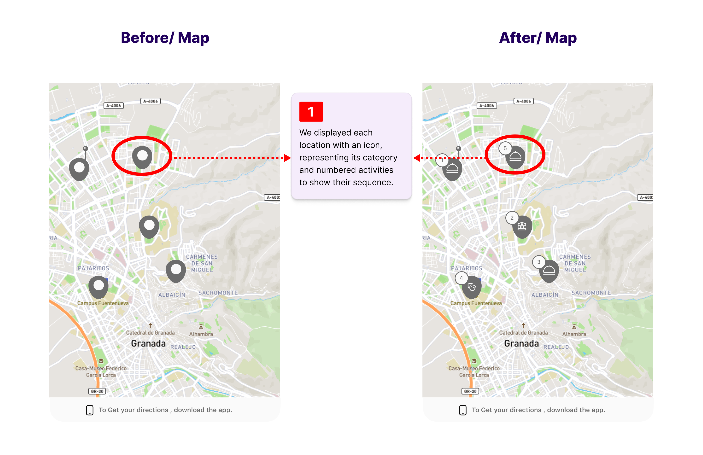
Activity Card
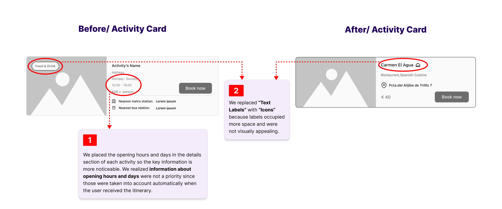
Category Page

High Fidelity
Final visual design system applied to all screens — colour, typography, components and imagery brought together into a cohesive product.
Getting Itinerary Process

Homepage · Itinerary · Booking Process

Prototype
Interactive end-to-end prototype of the personalised itinerary flow.